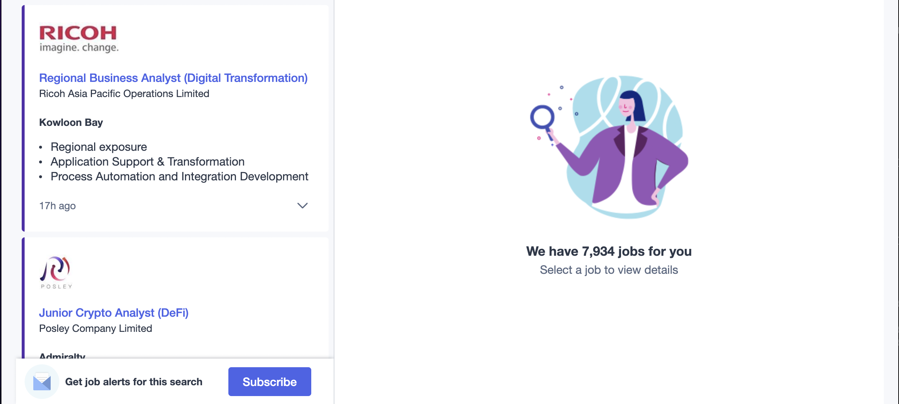
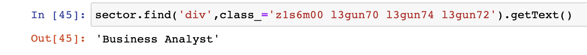
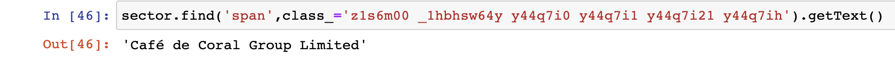
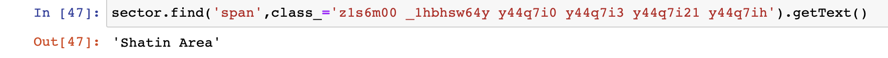
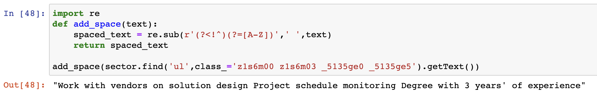
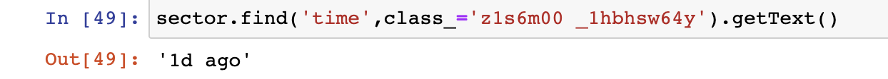
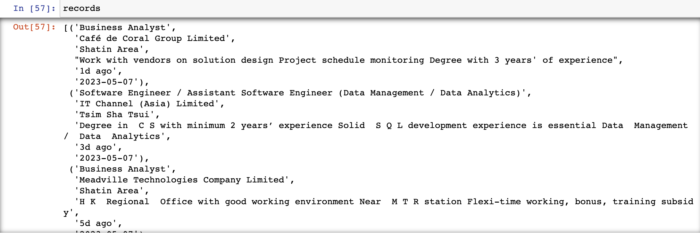
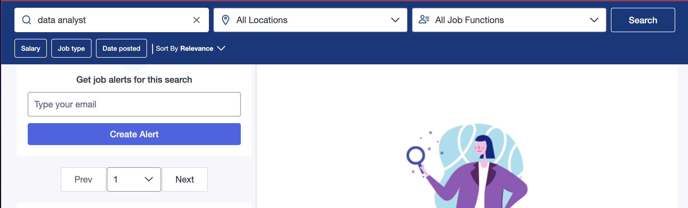

PYTHON - WEBSCRAPING PROJECT
This article provides a detailed, step-by-step explanation on my Python webscraping project on Jobsdb.
If you would like to review the full code, please visit my GitHub page at here.
import csv
from datetime import datetime
import requests
from bs4 import BeautifulSoup
url = 'https://hk.jobsdb.com/hk/search-jobs/data-analyst/1'
html_text = requests.get(url).text
soup = BeautifulSoup(html_text, 'html.parser')
soup

Evaluate the structure of the html and create a list variable to store all of the job ad
sectors = soup.find_all('div', class_='z1s6m00 _1hbhsw6n rqoqz1')
sectors
sector = sectors[0]
sector.find('div',class_='z1s6m00 l3gun70 l3gun74 l3gun72').getText()

6. Find the company name of the first job ad
sector.find('span',class_='z1s6m00 _1hbhsw64y y44q7i0 y44q7i1 y44q7i21 y44q7ih').getText()

7. Find the location of the first job ad
sector.find('span',class_='z1s6m00 _1hbhsw64y y44q7i0 y44q7i3 y44q7i21 y44q7ih').getText()

8. Find the description of the first job ad and perform data cleaning by using function
import re
def add_space(text):
spaced_text = re.sub(r'(?<!^)(?=[A-Z])',' ',text)
return spaced_text
add_space(sector.find('ul',class_='z1s6m00 z1s6m03 _5135ge0 _5135ge5').getText())

9. Find the publishing date of the first job ad
sector.find('time',class_='z1s6m00 _1hbhsw64y').getText()

10. Find the date of performing web scraping (data extract date)
today = datetime.today().strftime('%Y-%m-%d')
def get_record(sector):
job_title = sector.find('div',class_='z1s6m00 l3gun70 l3gun74 l3gun72').getText()
try:
company = sector.find('span',class_='z1s6m00 _1hbhsw64y y44q7i0 y44q7i1 y44q7i21 y44q7ih').getText()
except AttributeError:
company = ''
try:
location = sector.find('span',class_='z1s6m00 _1hbhsw64y y44q7i0 y44q7i3 y44q7i21 y44q7ih').getText()
except AttributeError:
location = ''
try:
description = add_space(sector.find('ul',class_='z1s6m00 z1s6m03 _5135ge0 _5135ge5').getText())
except AttributeError:
description = ''
post_date = sector.find('time',class_='z1s6m00 _1hbhsw64y').getText()
extract_date = datetime.today().strftime('%Y-%m-%d')
record = (job_title, company, location, description, post_date, extract_date)
return record
records = []
for sector in sectors:
record = get_record(sector)
records.append(record)
records

14. Investigate the code of the "next page" button of the website

Scape every page and escape the loop while no more "Next page" button in that page (i.e. final page is reached)
while True:
try:
url ='https://hk.jobsdb.com' + soup.find('div', class_ = 'z1s6m00 _1hbhsw6ce _1hbhsw6p').a.get('href')
except AttributeError:
break
html_text = requests.get(url).text
soup = BeautifulSoup(html_text,'html.parser')
sectors = soup.find_all('div', class_='z1s6m00 _1hbhsw6n rqoqz1')
for sector in sectors:
record = get_record(sector)
records.append(record)
with open('result.csv','w',newline='',encoding='utf-8') as f:
writer = csv.writer(f)
writer.writerow(['Job_title','Company','Location','Description','Post_date','Extract_date'])
writer.writerows(records)